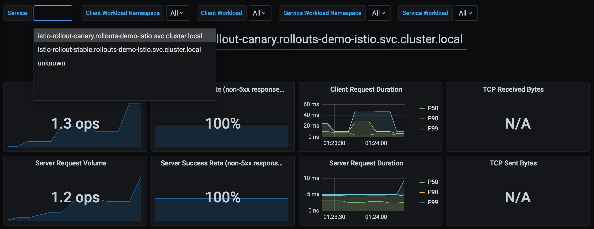
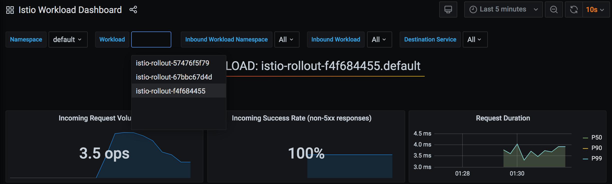

Istio¶
Istio is a service mesh that offers a rich feature-set to control the flow of traffic to a web service. Istio offers this functionality through a set of CRDs, and Argo Rollouts automates the management of these resources to provide advanced traffic shaping capabilities to the different versions of the Rollout during an update.
How it works¶
Traffic splitting is accomplished in Istio by adjusting traffic weights defined in an Istio VirtualService. When using Argo Rollouts with Istio, a user deploys a VirtualService containing at least one HTTP route containing two HTTP route destinations: a route destination targeting the pods of canary ReplicaSet, and a route destination targeting the pods stable ReplicaSet. Istio provides two approaches for weighted traffic splitting, both approaches are available as options in Argo Rollouts:
Host-level Traffic Splitting¶
The first approach to traffic splitting using Argo Rollouts and Istio, is splitting between two hostnames, or Kubernetes Services: a canary Service and a stable Service. This approach is similar to the way all other Argo Rollouts mesh/ingress-controller integrations work (e.g. ALB, SMI, Nginx). Using this approach, the user is required to deploy the following resources:
- Rollout
- Service (canary)
- Service (stable)
- VirtualService
The Rollout should define the following fields:
apiVersion: argoproj.io/v1alpha1
kind: Rollout
metadata:
name: rollout-example
spec:
...
strategy:
canary:
canaryService: canary-svc # required
stableService: stable-svc # required
trafficRouting:
istio:
virtualService:
name: rollout-vsvc # required
routes:
- primary # optional if there is a single route in VirtualService, required otherwise
steps:
- setWeight: 5
- pause:
duration: 10m
The VirtualService must contain an HTTP route with a name referenced in the Rollout, containing
two route destinations with host values that match the canaryService and stableService
referenced in the Rollout. If the VirtualService is defined in a different namespace than the rollout,
its name should be rollout-vsvc.<vsvc namespace name>. Note that Istio requires that all weights add to
100, so the initial weights can be 100% to stable, and 0% to canary.
apiVersion: networking.istio.io/v1alpha3
kind: VirtualService
metadata:
name: rollout-vsvc
spec:
gateways:
- istio-rollout-gateway
hosts:
- istio-rollout.dev.argoproj.io
http:
- name: primary # referenced in canary.trafficRouting.istio.virtualService.routes
route:
- destination:
host: stable-svc # referenced in canary.stableService
weight: 100
- destination:
host: canary-svc # referenced in canary.canaryService
weight: 0
Finally, a canary and stable Service should be deployed. The selector of these Services will be
modified by the Rollout during an update to target the canary and stable ReplicaSet pods.
Note that if the VirtualService and destination host resides in different namespaces (e.g., VirtualService and Rollout are not in the same namespace), the namespace should be included in the destination host (e.g. stable-svc.<namespace>).
apiVersion: v1
kind: Service
metadata:
name: canary-svc
spec:
ports:
- port: 80
targetPort: http
protocol: TCP
name: http
selector:
app: rollouts-demo
# This selector will be updated with the pod-template-hash of the canary ReplicaSet. e.g.:
# rollouts-pod-template-hash: 7bf84f9696
---
apiVersion: v1
kind: Service
metadata:
name: stable-svc
spec:
ports:
- port: 80
targetPort: http
protocol: TCP
name: http
selector:
app: rollouts-demo
# This selector will be updated with the pod-template-hash of the stable ReplicaSet. e.g.:
# rollouts-pod-template-hash: 123746c88d
During the lifecycle of a Rollout update, Argo Rollouts will continuously:
- modify the canary Service
spec.selectorto contain therollouts-pod-template-hashlabel of the canary ReplicaSet - modify the stable Service
spec.selectorto contain therollouts-pod-template-hashlabel of the stable ReplicaSet - modify the VirtualService
spec.http[].route[].weightto match the current desired canary weight
Note
Rollout does not make any other assumptions about the fields within the VirtualService or the Istio mesh. The user could specify additional configurations for the VirtualService like URI rewrite rules on the primary route or any other route if desired. The user can also create specific DestinationRules for each of the services.
Subset-level Traffic Splitting¶
Important
Available since v1.0
The second approach to traffic splitting using Argo Rollouts and Istio, is splitting between two Istio DestinationRule Subsets: a canary subset and a stable subset. When splitting by DestinationRule subsets, the user is required to deploy the following resources:
- Rollout
- Service
- VirtualService
- DestinationRule
The Rollout should define the following fields:
apiVersion: argoproj.io/v1alpha1
kind: Rollout
metadata:
name: rollout-example
spec:
...
strategy:
canary:
trafficRouting:
istio:
virtualService:
name: rollout-vsvc # required
routes:
- primary # optional if there is a single route in VirtualService, required otherwise
destinationRule:
name: rollout-destrule # required
canarySubsetName: canary # required
stableSubsetName: stable # required
steps:
- setWeight: 5
- pause:
duration: 10m
A single service should be defined, which targets the Rollout pods. Note that unlike the first approach, where traffic splitting is against multiple Services which are modified to contain the rollout-pod-template-hash of the canary/stable ReplicaSets, this Service is not modified by the rollout controller.
apiVersion: v1
kind: Service
metadata:
name: rollout-example
spec:
ports:
- port: 80
targetPort: http
protocol: TCP
name: http
selector:
app: rollout-example
The VirtualService must contain an HTTP route with a name referenced in the Rollout, containing
two route destinations with subset values that match the canarySubsetName and stableSubsetName
referenced in the Rollout. Note that Istio requires that all weights add to 100, so the initial
weights can be 100% to stable, and 0% to canary.
apiVersion: networking.istio.io/v1alpha3
kind: VirtualService
metadata:
name: rollout-vsvc
spec:
gateways:
- istio-rollout-gateway
hosts:
- istio-rollout.dev.argoproj.io
http:
- name: primary # referenced in canary.trafficRouting.istio.virtualService.routes
route:
- destination:
host: rollout-example
subset: stable # referenced in canary.trafficRouting.istio.destinationRule.stableSubsetName
weight: 100
- destination:
host: rollout-example
subset: canary # referenced in canary.trafficRouting.istio.destinationRule.canarySubsetName
weight: 0
Finally, the DestinationRule containing the canary and stable subsets referenced in the Rollout.
apiVersion: networking.istio.io/v1alpha3
kind: DestinationRule
metadata:
name: rollout-destrule
spec:
host: rollout-example
subsets:
- name: canary # referenced in canary.trafficRouting.istio.destinationRule.canarySubsetName
labels: # labels will be injected with canary rollouts-pod-template-hash value
app: rollout-example
- name: stable # referenced in canary.trafficRouting.istio.destinationRule.stableSubsetName
labels: # labels will be injected with stable rollouts-pod-template-hash value
app: rollout-example
During the lifecycle of a Rollout using Istio DestinationRule, Argo Rollouts will continuously:
- modify the VirtualService
spec.http[].route[].weightto match the current desired canary weight - modify the DestinationRule
spec.subsets[].labelsto contain therollouts-pod-template-hashlabel of the canary and stable ReplicaSets
TCP Traffic Splitting¶
Important
Available since v1.2.2
Support for splitting TCP traffic was introduced and requires the Rollout to define the following fields:
apiVersion: argoproj.io/v1alpha1
kind: Rollout
metadata:
name: rollout-example
spec:
...
strategy:
canary:
canaryService: canary-svc # required
stableService: stable-svc # required
trafficRouting:
istio:
virtualService:
name: rollout-vsvc # required
tcpRoutes:
# Below fields are optional but if defined, they should match exactly with at least one of the TCP route match rules in your VirtualService
- port: 3000 # Only required if you want to match any rule in your VirtualService which contains this port
steps:
- setWeight: 5
- pause:
duration: 10m
The VirtualService must contain a TCP route with a matching port referenced in the Rollout
apiVersion: networking.istio.io/v1alpha3
kind: VirtualService
metadata:
name: rollout-vsvc
spec:
gateways:
- istio-rollout-gateway
hosts:
- istio-rollout.dev.argoproj.io
tcp:
- match:
- port: 3000
route:
- destination:
host: stable-svc # referenced in canary.stableService
weight: 100
- destination:
host: canary-svc # referenced in canary.canaryService
weight: 0
Multicluster Setup¶
If you have Istio multicluster setup where the primary Istio cluster is different than the cluster where the Argo Rollout controller is running, then you need to do the following setup:
- Create a
ServiceAccountin the Istio primary cluster.apiVersion: v1 kind: ServiceAccount metadata: name: argo-rollouts-istio-primary namespace: <any-namespace-preferrably-config-namespace> - Create a
ClusterRolethat provides access to Rollout controller in the Istio primary cluster.Note: If Argo Rollout controller is also installed in the Istio primary cluster, then you can reuse theapiVersion: rbac.authorization.k8s.io/v1 kind: ClusterRole metadata: name: argo-rollouts-istio-primary rules: - apiGroups: - networking.istio.io resources: - virtualservices - destinationrules verbs: - get - list - watch - update - patchargo-rollouts-clusterroleClusterRole instead of creating a new one. - Link the
ClusterRolewith theServiceAccountin the Istio primary cluster.apiVersion: rbac.authorization.k8s.io/v1 kind: ClusterRoleBinding metadata: name: argo-rollouts-istio-primary roleRef: apiGroup: rbac.authorization.k8s.io kind: ClusterRole name: argo-rollouts-istio-primary subjects: - kind: ServiceAccount name: argo-rollouts-istio-primary namespace: <namespace-of-the-service-account> - Now, use the following command to generate a secret for Rollout controller to access the Istio primary cluster.
This secret will be applied to the cluster where Argo Rollout is running (i.e, Istio remote cluster),
but will be generated from the Istio primary cluster. This secret can be generated right after Step 1,
it only requires
ServiceAccountto exist. Reference to the command.istioctl x create-remote-secret --type remote --name <cluster-name> \ --namespace <namespace-of-the-service-account> \ --service-account <service-account-created-in-step1> \ --context="<ISTIO_PRIMARY_CLUSTER>" | \ kubectl apply -f - --context="<ARGO_ROLLOUT_CLUSTER/ISTIO_REMOTE_CLUSTER>" - Label the secret.
kubectl label secret <istio-remote-secret> istio.argoproj.io/primary-cluster="true" -n <namespace-of-the-secret>
Comparison Between Approaches¶
There are some advantages and disadvantages of host-level traffic splitting vs. subset-level traffic splitting.
DNS requirements¶
With host-level splitting, the VirtualService requires different host values to split among the
two destinations. However, using two host values implies the use of different DNS names (one for
the canary, the other for the stable). For north-south traffic, which reaches the Service through
the Istio Gateway, having multiple DNS names to reach the canary vs. stable pods may not matter.
However, for east-west or intra-cluster traffic, it forces microservice-to-microservice communication to choose whether to hit the
stable or the canary DNS name, go through the gateway, or add DNS entries for the VirtualServices.
In this situation, the DestinationRule subset traffic splitting would be a better option for
intra-cluster canarying.
Metrics¶
Depending on the choice of host-level splitting vs. subset-level splitting, there will be different styles of prometheus metrics available. For example, if using host-level splitting, the metrics of the canary vs. stable would appear in the Istio Service metrics dashboard:

On the other hand, when splitting via subsets, it would be necessary to query prometheus using different parameters, such as the workload name:

Integrating with GitOps¶
Earlier it was explained that VirtualServices should be deployed with an initial canary and stable weight of 0 and 100, respectively, such as in the following example:
http:
- name: primary
route:
- destination:
host: stable-svc
weight: 100
- destination:
host: canary-svc
weight: 0
This introduces a problem for users practicing GitOps. Since a Rollout will modify these VirtualService weights as the Rollout progresses through its steps, it unfortunately causes the VirtualService to become OutOfSync with the version in git. Additionally, if the VirtualService in git were to be applied while the Rollout is in this state (splitting traffic between the services), the apply would revert the weights back to the values in git (i.e. 100 to stable, 0 to canary).
One protection which is implemented in Argo Rollouts, is that it continually watches for changes to
managed VirtualServices. In the event that a kubectl apply were to happen using the VirtualService
in git, the change would be detected immediately by the rollout controller, and the controller will
instantly set the VirtualService weights back to the canary weight appropriate for the given step of
the Rollout. But since there is momentary flapping of weights, this behavior should be understood.
Some best practices to follow when using Argo CD with Argo Rollouts to prevent this behavior, is to leverage the following Argo CD features:
-
Configure the application to ignore differences in the VirtualService. e.g.:
apiVersion: argoproj.io/v1alpha1 kind: Application metadata: name: guestbook spec: ignoreDifferences: - group: networking.istio.io kind: VirtualService jsonPointers: - /spec/http/0Ignoring the differences in the VirtualServices HTTP route, prevents gitops differences in the VirtualService HTTP routes to contribute to the overall sync status of the Argo CD application. This adds the additional benefit of prevent auto-sync operations from being triggered.
-
Configure the Application to only apply OutOfSync resources:
apiVersion: argoproj.io/v1alpha1 kind: Application metadata: name: guestbook spec: syncPolicy: syncOptions: - ApplyOutOfSyncOnly=trueBy default, when Argo CD syncs an application, it runs
kubectl applyagainst all resources in git which are part of the application. TheApplyOutOfSyncOnly=truesync option indicates to Argo CD to skip applying resources which it already considersSynced, and only apply the ones which areOutOfSync. This option, when used in conjunction with theignoreDifferencesfeature, provides a way to manage the conflict in the desired state of a VirtualService between Argo CD and Argo Rollouts.
Argo CD also has an open issue here which would help address this problem. The proposed solution is to introduce an annotation to resources, which indicates to Argo CD to respect and preserve the differences at a specified path, in order to allow other controllers (e.g. Argo Rollouts) controller manage them instead.
Ping Pong¶
Important
Available since v1.7
Argo Rollouts also supports ping pong when using Istio this was added to support configuring both ALB and Istio traffic routers at the same time. When using an ALB, ping-pong is generally a best practice especially with ALB readiness gates enabled. However, when we change the service selectors when a rollout is aborted back to stable pod hash it causes a blip of traffic outage because the ALB controller will set the pod readiness gates to false for a short while due to the label changes. If we configure both ALB and Istio with ping-pong this selector change does not happen and hence we do not see any outages.
Alternatives Considered¶
Rollout ownership over the Virtual Service¶
An early design alternative was that instead of the controller modifying a referenced VirtualService, the Rollout controller would create, manage, and own a Virtual Service. While this approach is GitOps friendly, it introduces other issues:
- To provide the same flexibility as referencing VirtualService within a Rollout, the Rollout needs to inline a large portion of the Istio spec. However, networking is outside the responsibility of the Rollout and makes the Rollout spec unnecessarily complicated.
- If Istio introduces a feature, that feature will not be available in Argo Rollouts until implemented within Argo Rollouts.
Both of these issues adds more complexity to the users and Argo Rollouts developers compared to referencing a Virtual Service.
Istio support through the SMI Adapter for Istio¶
SMI is the Service Mesh Interface, which serves as a standard interface for all common features of a service mesh. This feature is GitOps friendly, but native Istio has extra functionality that SMI does not currently provide.